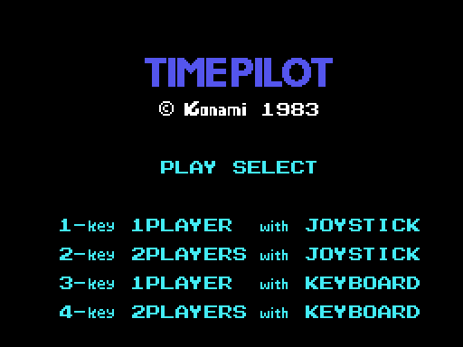
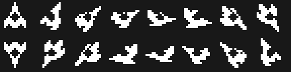

Findings
What turns up on taking it apart and cannot be seen by playing. Each item with its address.
The fourth era is 1984, not 1982
The five years the panel paints are at 0x4E7C, four characters each: 1910, 1940, 1970, 1984 and 2001. In the arcade that fourth era is 1982, the year of the original; this conversion changed it. The cartridge itself, on the other hand, signs ©KONAMI 1983, so the year you see on the game screen is later than the one you see on the title screen.

The attract mode flies by reading the cartridge itself
When the game is left alone, the "joystick" does not come from any random generator. MANDO_DE_LA_DEMO (0x546B) does this:
ld hl,05399h ; the plane routine itself
ld a,r ; the memory refresh register
call SUMA_A_HL
ld a,(hl)
ld (0e009h),a ; and that is the controlsSo the demo flies by reading the very program that is flying it. Since R moves on with every instruction the byte that comes out is different each time, and since the code is not random the plane traces turns that look deliberate without being so.
The shots are characters that look before they write
The MSX can only show four sprites on a line, so Time Pilot keeps the sprites for the planes and draws the eight shots in the name table. Each slot is four bytes at 0xE230: the cell, the direction of flight and the character.
Before painting itself, each shot reads the cell it is heading for (0x557B): it sets the address in read mode, looks at what is there, and only writes if what it finds is sky. That way they neither overwrite each other nor cover the scenery, and erasing means writing the sky character back.
The big machine at the end of the era does the same, six characters wide by four tall.
The plane does not move: it turns
The controls say which of the sixteen directions you want (table at 0x545B), and the plane turns one step at a time until it gets there, always the short way round: if the difference is more than eight, it turns the other way (0x53CE).

Each direction has its own 32 bytes of artwork at 0x6F2B, but only one is in video memory: as soon as the direction changes, the 32 bytes that are due are uploaded to the same place (0x53E3). One sprite, sixteen drawings and a single slot.
The interrupt shares its work over six frames
0xE01F counts from 0 to 5 and the table at 0x4118 says what is due on each one: the shots and the plane, the background, the big machine, and the enemies three frames out of six. And on the way out the VDP status is read again: if another interrupt has arrived meanwhile, it takes one more step without leaving (0x410B).
The same letters, twice in VRAM and once in the cartridge
The bytes from 0x798B on are uploaded twice: once as the tail of the menu character block (0x4272) and once as the head of the font (0x427A). The digits at 0x79D3 do the same (0x45E9).

In SCREEN 2 colour goes per character, so the only way to have the same alphabet in two colours is to have it under two character numbers. Time Pilot manages that without storing the artwork twice: it uploads the same bytes to two places.
Silence is an empty sound program
To shut channel 2 up at once, 0x5C8F does not touch the PSG or set any flag: it points the channel at the 0xFF that closes the program at 0x7E40. On the next step the channel reads that 0xFF, goes quiet and switches itself off, the usual way.
Background characters are stored once and uploaded shifted
SUBE_CARACTERES_GIRADOS (0x4B81) takes a block of characters, uploads it to VRAM and then repeats the block shifted two or four pixels to the left, as many times as 0xE00A says. The bits that leave one byte enter the byte of the character next to it (0x4BC0). That way the scenery can move in two-pixel steps without touching the name table and without storing more artwork.
The game's numbers
- Lives: two per player, and one more at 10,000 points and then every 50,000 (0x48F0). The threshold lives in the top digits of the score and grows by five.
- Enemies per round: 25 on the first, and five more every five rounds up to a cap of 50 (0x48A5).
- Points: 50 for an enemy, 500 for one of the era's own, 500 for picking up the passenger and 500 for the big machine, which takes twenty-four hits (0x5CF5).
- Shots: eight at a time at most, and with the controls no more than four in a row (0x54E8); the demo fires always.
A ret nobody reaches
At 0x6012 there is a loose 0xC9 byte between the last of the enemy shot steps and the routine at 0x6013. No instruction in the listing jumps there and no pointer lands there.